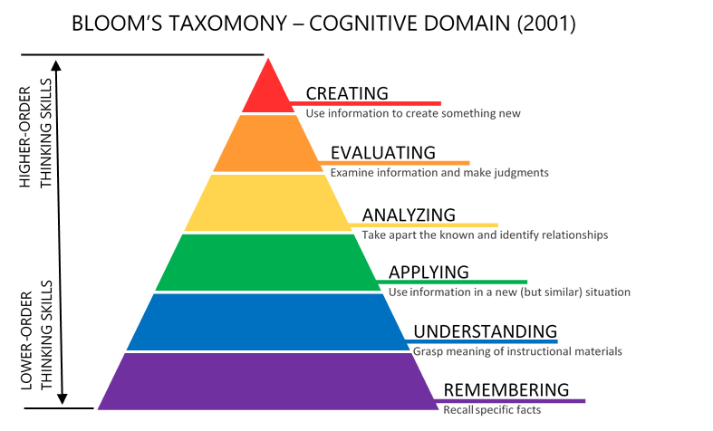
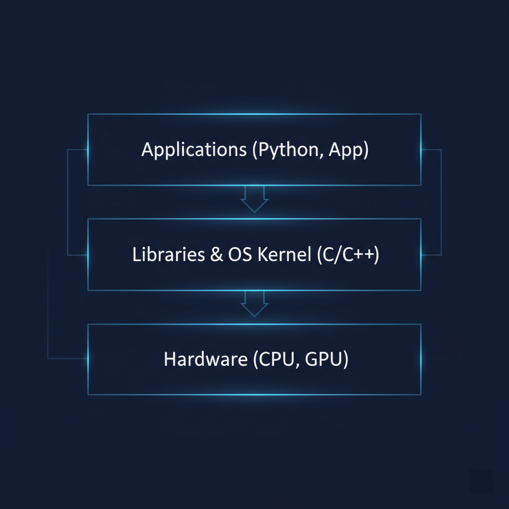
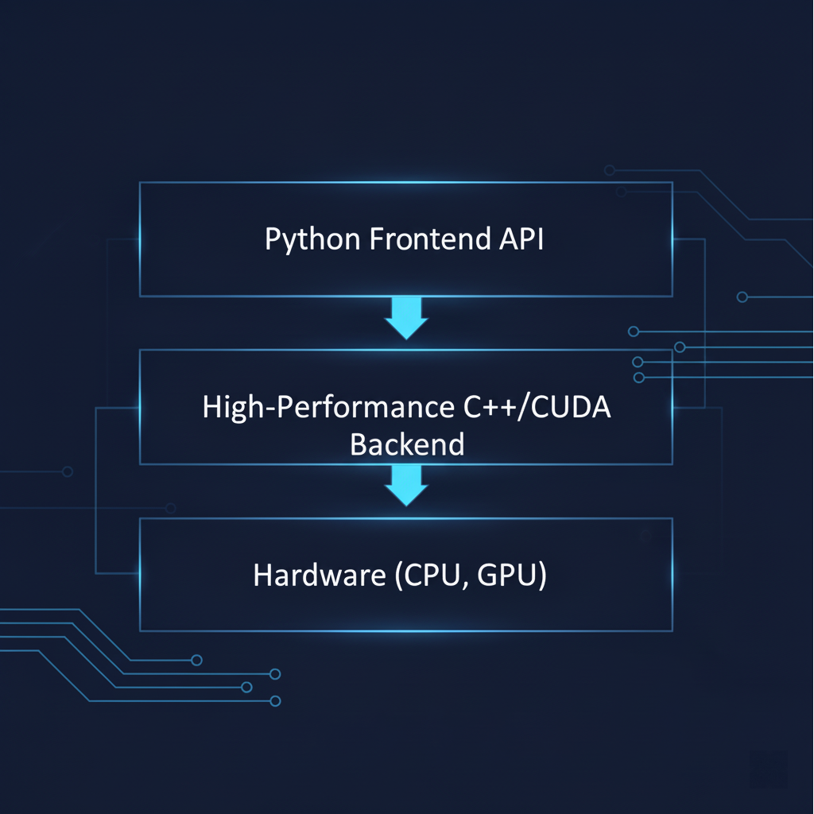

程序设计基础 · 第0章
课程概述
第0章解决什么问题？
课程是什么
学什么、怎么学、为什么重要
资源在哪里
教材、课件、平台、代码
如何评价
理论、实验、练习、项目
怎样开始
预习、环境、Pintia、AI助手
本章结构
| 模块 | 主题 |
|---|---|
| 0.1 | 课程基本信息 |
| 0.2 | 教材与学习资源 |
| 0.3 | 学习过程与考核 |
| 0.4 | 为什么学习C语言 |
| 0.5 | 衔接第1章 |
课程介绍
课程定位
- 课程名称：程序设计基础/程序设计实验与课程设计
- 核心内容：C语言程序设计
- 授课对象：计算机科学与技术一年级学生
- 课程性质：专业基础必修课，学位课
关键词
程序数据算法调试
问题求解上机实践AI协作
课程结构
理论课
3 学分
约48课时
实验课
1.5 学分
约48课时
周课时
3 + 3
理论与实践同步推进
这门课怎样形成能力？
课前预习
→
课堂理解
→
实验上机
→
平台练习
→
阶段测试
→
综合项目
不是“听懂一节课”就会编程，而是通过持续练习逐步形成能力。
关于教材：两本书配合使用
关于参考教材
- 《C语言的科学和艺术》，Eric S. Roberts 著，翁惠玉等译，机械工业出版社，2011年6月
- 《C程序设计语言（第2版）》，Brian W. Kernighan & Dennis M. Ritchie 著，徐宝文、李志译，机械工业出版社，2019年3月
- 《标准C语言基础教程（第4版）》，Gary J. Bronson 著，电子工业出版社，2018年1月
- 《C语言教程（第4版）》，Al Kelley、Ira Pohl 著，徐波译，机械工业出版社，2011年6月
- 《C Primer Plus（第6版）》，Stephen Prata 著，姜佑译，人民邮电出版社，2016年4月
参考教材不是必须全部阅读，而是在遇到难点、想拓展或准备项目时使用。
关于网络资源
课程资料在哪里？
建议从第一天建立课程文件夹
程序设计基础
├─ 课件
├─ 实验
├─ 作业
├─ PTA提交记录
└─ 代码
├─ lab00
├─ lab01
└─ project
源程序文件名尽量使用英文、数字和下划线，例如
hello.c、lab01_1.c。
课程考核：程序设计基础
| 组成 | 比例 | 说明 |
|---|---|---|
| 期末卷面成绩 | 50% | 考查基本概念、程序阅读、程序设计和问题求解能力 |
| 阶段上机测试 | 40% | 考查真实编程、调试、提交和独立解决问题能力（约5至6次，包括杭师大联考） |
| 平时成绩 | 10% | 包括签到、问答、交流、课堂参与等 |
课程考核：实验与课程设计
| 组成 | 比例 | 说明 |
|---|---|---|
| 上机考成绩 | 50% | 检验编程实践能力 |
| 刷题练习情况 | 35% | Pintia等平台练习完成情况和质量（如Leetcode、牛客网、洛谷等） |
| 大程序作业 | 10% | 综合应用与程序设计实践（后半学期布置） |
| C语言在线课程学习 | 5% | 线上学习与自主巩固 |
练习的四个层次
练习任务
- 范例任务：重复上课内容
- 补全任务：关键代码填空
- 逆向任务：根据结果分析实现
- 独立任务：自己完成完整程序
能力发展
- 能看懂和调试代码
- 能在已有代码基础上改写
- 能组合代码实现功能
- 能独立编写程序解决问题
从“会看”到“会创作”

程序设计学习不是一步到位
- 先能读懂示例
- 再能修改代码
- 再能调试和测试
- 最后能独立设计程序
第一次实验从第一天开始
第一次实验基本方式：
Pintia题目持续开放，五道入门题全部可见，原则上按顺序完成；
允许使用教材、课件和手机AI助手，但最终程序必须自己能看懂、能运行、能验证。
Pintia题目持续开放，五道入门题全部可见，原则上按顺序完成；
允许使用教材、课件和手机AI助手，但最终程序必须自己能看懂、能运行、能验证。
环境检查
→
五题开放
→
自主推进
→
固定检查点
→
课后补完
AI可以用，但要有规则
推荐使用
- 解释概念
- 提示错误原因
- 帮助设计测试数据
- 比较不同写法
- 检查自己写的程序
不接受
- 不思考直接复制
- 不能解释自己提交的代码
- 不运行、不测试就提交
- 把所有作业完全交给AI
先想 → 再问 → 看懂 → 运行 → 验证 → 修改
两个常见疑问
有了人工智能，
还要学 C 干什么？
人工智能好像都用 Python，
为什么还要学 C？
先不急着谈代码

先看现象
- AI响应为什么有时很慢？
- 手机运行AI应用为什么会发热？
- 自动驾驶系统中零点几秒延迟意味着什么？
- 大模型训练为什么需要巨大的算力？
背后是什么？
AI应用看起来“聪明”，但背后首先是大量计算、数据传输、内存访问和系统调度。
越接近底层，效率、资源和可靠性就越重要。
越接近底层，效率、资源和可靠性就越重要。
这正是 C / C++ 等系统级语言长期存在的重要原因
编程语言到底是什么？
人类语言
- 模糊
- 有歧义
- 依赖上下文
- 可以省略很多细节
计算机语言
- 精确
- 无歧义
- 逻辑严密
- 每一步都必须清楚
编程语言是人和计算机沟通的精确表达工具。
C语言在计算机系统中的位置

C语言像“承重结构”
- 向上支撑：支撑解释器、虚拟机、库和框架
- 向下沟通：接近操作系统、驱动和硬件
- 学习价值：帮助理解程序运行的底层机制
AI时代的C语言角色
高性能计算核心

AI需要大量矩阵、向量和并行计算，底层实现追求极致性能。
系统与硬件桥梁
GPU、驱动、并行程序设计都离不开底层语言和系统理解。
边缘AI与嵌入式
在资源有限的设备中运行程序，小、快、省非常关键。
所以，学习C不是为了“怀旧”
学习C，你会看到
- 数据类型
- 内存和地址
- 程序结构
- 编译和运行
- 效率与错误
AI时代更需要
- 能读懂代码
- 能判断代码
- 能调试程序
- 能验证结果
- 能对程序负责
接下来进入第1章
课程规则
→
为什么学C
→
AI时代的程序设计
→
认识程序
→
第一个C程序
第1章核心问题：AI都会写代码了，我们怎样真正学会程序设计？
第一次课前请完成
学习准备
- 通读理论教材第一部分
- 通读实验教材第一部分
- 了解第一次实验任务
- 准备课堂笔记和教材
工具准备
- 安装 Dev-C++ / Visual Studio 等C环境
- 运行一次 Hello World
- 注册并登录 Pintia
- 手机准备一个可用AI助手